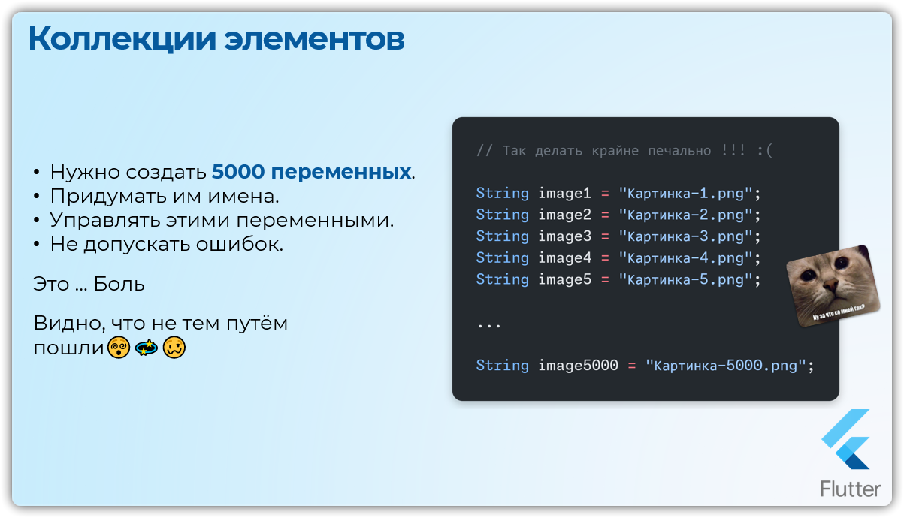
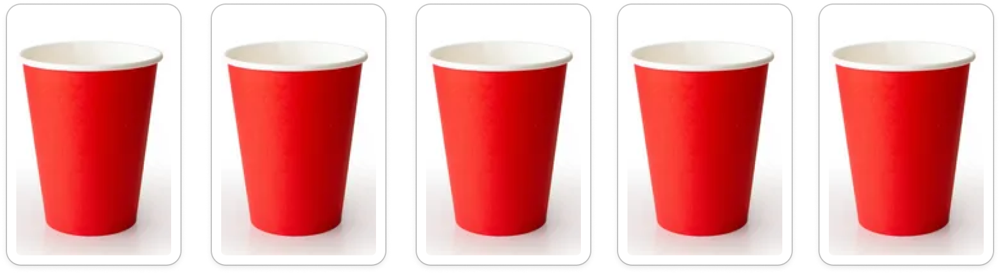
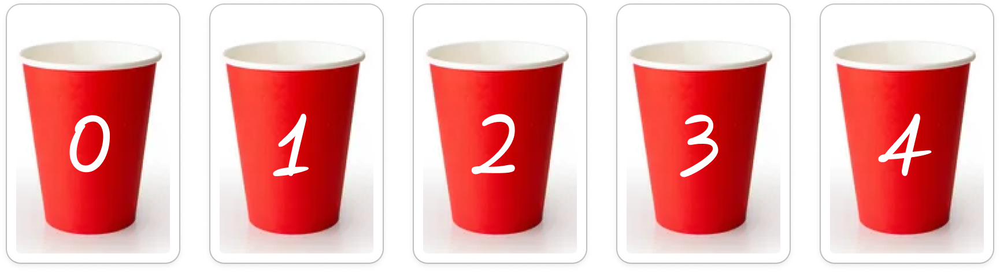
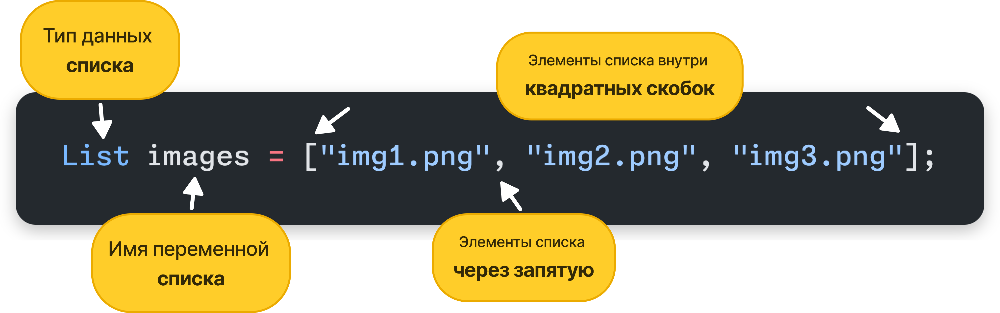
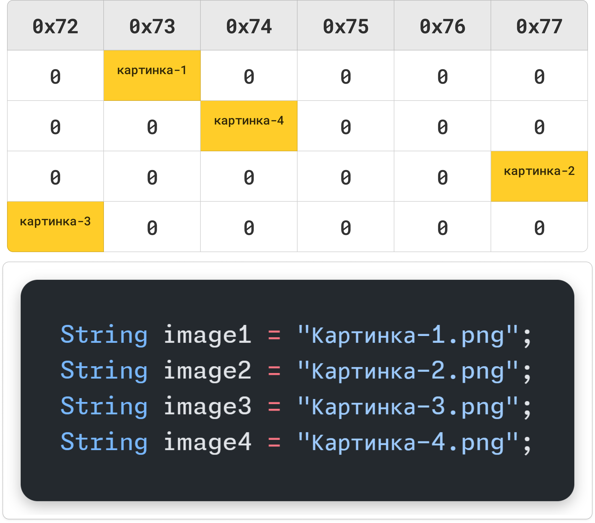
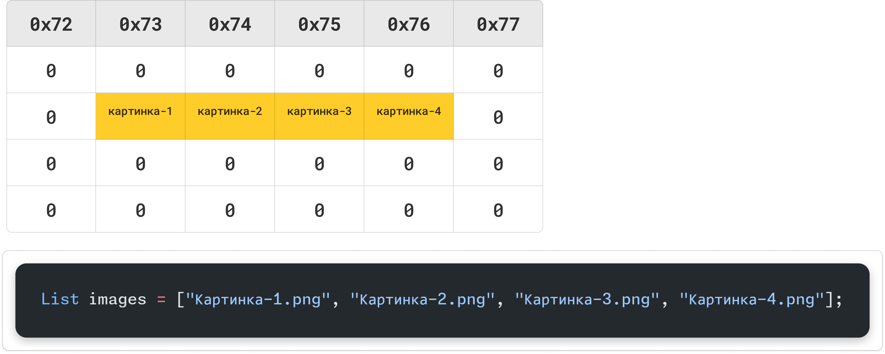
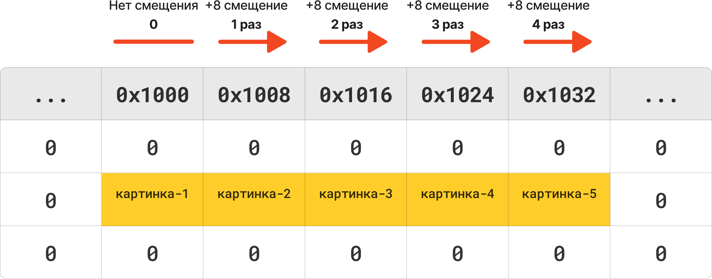

Урок 8: Списки List
Коллекции элементов
Напоминалка
Переменная - это именованная область памяти, в которой находится нужное нам значение. Если это область именованная, значит у неё есть какое-то имя. По имени мы можем получить доступ к данным, можем изменить данные.
До этого момента, определенное значение мы сохраняли в одной переменной, например нужно сохранить в переменной название и путь до изображения на удаленном сервере.
String image = "Картинка-1.png";
С одной фотографией всё прекрасно, но … допустим нужно сохранить и иметь доступ к фотографиям которых больше 5000 штук
Боль ...
Это получается нужно создать 5000 переменных. Придумать им имена. Как-то управлять этими переменными да ещё и не допустить ошибок.
Это ... Боль
Видно, что не тем путём пошли
// Так делать крайне печально !!! :(
String image1 = "Картинка-1.png";
String image2 = "Картинка-2.png";
String image3 = "Картинка-3.png";
String image4 = "Картинка-4.png";
String image5 = "Картинка-5.png";
...
String image5000 = "Картинка-5000.png";

В частности по этой причине, начали придумывать различные способы объединения данных. Для больших объемов данных с которыми нужно производить операции доступа, записи, изменения, придумали способы объединять данные в специальные структуры данных.
В Dart есть 3 вида коллекций:
- Список (
List) хранит элементы в определенном порядке и доступ к ним по индексу. - Множество (
Set) хранит уникальные элементы, порядок которых не определен. - Словарь (
Map) хранит пары ключ-значение (записи); ключи уникальны
В данной ситуации, когда нужно сохранить очень много элементов одного и того же типа и которые хранятся последовательно друг за другом, лучше использовать специальную структуру данных - Список (Массив)
Коллекция элементов
Вместо создания 5000 переменных, можно создать только одну переменную, которая будет хранить целую коллекцию элементов
Списки элементов
`List`
Список List - это коллекция элементов одного типа данных, которые хранятся в определённом порядке. Каждый элемент списка имеет индекс (index)
Список можно представить себе в виде подноса со стаканами

Все стаканы пронумерованы, у каждого есть свой индекс, свое место на подносе!
Важно! Индексы в программировании начинаются с 0

Важно!
Индексы списков в программировании начинаются с 0
Создание списка
Вместо создания миллиона переменных, создадим только одну переменную images, которая может хранить уже целые списки элементов
- В самом начале указывается тип данных
List - Далее
имя переменной, обычно вомножественномчисле - в эту переменную присваивается список элементов внутри
квадратных скобочек - Элементы внутри квадратных скобочек,
разделены запятыми

// Создание массива
List images = ["Картинка-1.png", "Картинка-2.png", "Картинка-3.png"];
// Доступ к элементам массива
print( images[0] ); // Картинка-1.png
print( images[1] ); // Картинка-2.png
print( images[2] ); // Картинка-3.png
Получить значение из массива
- обратиться к имени массива
- добавить квадратные скобки
- в скобках указать индекс элемента
При создании списка можно явно указать тип данных элементов. Указывается в треугольных скобках.
// Явное указание типа данных элементов списка
List numbers = [1, 2, 3, 4, 5, 6, 7];
List images = ["Картинка-1.png", "Картинка-2.png", "Картинка-3.png"];
Списки в оперативной памяти
Когда мы создаём переменные, для них выделяются ячейки в оперативной памяти. Эти ячейки могут быть расположены в разных местах памяти, в зависимости от того, где есть свободное пространство.
Такой подход может затруднить доступ к этим переменным, поскольку при работе с ними система должна находить адрес каждой переменной отдельно. Этот процесс может требовать дополнительных ресурсов для поиска и обращения к памяти.

Когда мы создаём массив или список, операционная система обычно выделяет один непрерывный блок памяти для всех элементов. Это означает, что после первой ячейки для первого элемента все последующие элементы списка будут находиться последовательно в соседних ячейках памяти.
Такое размещение упрощает и ускоряет доступ к элементам, так как достаточно знать адрес первого элемента и шаг перехода к следующему элементу, чтобы обращаться к любому элементу списка напрямую.

Примечание
Существует множество структур данных, и рассмотренный выше пример актуален для простых массивов. Он показан для демонстрации и понимания основ работы с памятью. Например, такие структуры данных, как связанные списки и динамические списки, работают с памятью немного сложнее.
CRUD Операции
Сначала стоит отметить, что существует два вида списков/массивов
- Изменяемые
- Неизменяемые
Изменяемый список
List — это динамический массив, что означает, что его размер может изменяться во время выполнения программы.
На начальном этапе памяти выделяется ровно столько, сколько необходимо для хранения элементов. Однако если список превышает текущий размер, Dart выделяет новый, более крупный блок памяти, копирует туда все элементы из старого массива и добавляет новые.
Что такое CRUD операции?
CRUD операции
Существует 4 операции над данными:
Создание, Чтение, Обновление, Удаление
Create
Read
Update
Delete
C - Create - Создание данных
void main() {
// C - Create - Создание данных
List images = [
"Картинка-1.png",
"Картинка-2.png",
"Картинка-3.png",
];
images.add("Картинка-4"); // Добавить в конец списка новый элемент
images.add(4); // Ошибка! Список принимает элементы только типа String
}
R - Read - Чтение данных
void main() {
List images = [
"Картинка-1.png",
"Картинка-2.png",
"Картинка-3.png",
];
images.add("Картинка-4");
// R - Read - Чтение данных
// Получить все элементы списка
print(images); // [Картинка-1.png, Картинка-2.png, Картинка-3.png, Картинка-4]
// Получить первый элемент списка
print(images[0]); // "Картинка-1.png"
// Получить размер списка
print(images.length); // 4
// Получить последний элемент списка
print(images[images.length]); // Ошибка. Индекс 4 находится за пределами списка
// Почему ошибка?
// Индексы начинаются с 0
// В списке 4 элемента, значит индексы 0 1 2 3
// Мы пытаемся получить 5 элемент по индексу 4 (которого не существует)
// Получить последний элемент списка
print(images[images.length-1]); // "Картинка-4"
print(images.last); // "Картинка-4"
}
U - Update - Обновление данных
void main() {
List images = [
"Картинка-1.png",
"Картинка-2.png",
"Картинка-3.png",
];
images.add("Картинка-4");
print(images);
print(images[0]);
print(images.length);
print(images[images.length-1]);
print(images.last);
// U - Update - Обновление данных
images[images.length - 1] = "Картинка-4.png";
print(images);
// [Картинка-1.png, Картинка-2.png, Картинка-3.png, Картинка-4.png]
}
D - Delete - Удаление данных
void main() {
List images = [
"Картинка-1.png",
"Картинка-2.png",
"Картинка-3.png",
];
images.add("Картинка-4");
print(images);
print(images[0]);
print(images.length);
print(images[images.length-1]);
print(images.last);
images[images.length - 1] = "Картинка-4.png";
print(images);
// D - Delete - Удаление данных
images.removeAt(2); // Удалить 3 элемент списка
print(images); // [Картинка-1.png, Картинка-2.png, Картинка-4.png]
}
Перебор списка с помощью циклов
Перебор списка
Это процесс последовательного доступа к каждому элементу списка для его обработки.
Цикл for позволяет перебирать список по индексам. Это полезно, если вам нужно получить доступ не только к элементам, но и к их индексам.
List numbers = [1, 2, 3, 4, 5];
for (int i = 0; i < list.length; i++) {
// Доступ к элементу через индекс
print(list[i]);
}
List shawarmas = [
"Шаурма Королевская",
"Шаурма Деревенская",
"Шаурма Гавайская",
];
print("Сегодня у нас в меню:");
for (var i = 0; i < shawarmas.length; i++) {
print("Блюдо № ${i+1} - ${shawarmas[i]}");
}
Цикл for-in удобен, когда вам не нужны индексы, а нужно просто получить доступ к каждому элементу списка.
List shawarmas = [
"Шаурма Королевская",
"Шаурма Деревенская",
"Шаурма Гавайская",
];
print("Сегодня у нас в меню:");
for (var shawarma in shawarmas) {
print('Блюдо: $shawarma');
}
Полезные методы работы со списками
List myList = [1, 2, 3];
myList.length; // Размер списка
myList.isEmpty; // Есть ли в списке элементы
myList.reversed; // ? Развернуть список [3, 2, 1]
myList.add(3); // Добавить значение в конец списка
myList.addAll([4, 5, 6]); // Добавить ещё один список
myList.insert(0, 42); // Добавить значение 42 по индексу 0
myList.indexOf(2); // Найти индекс элемента по его значению
myList.removeAt(1); // Удалить элемент по его индексу
myList.contains(7); // Содержит ли список указанный элемент
myList.clear(); // ? Отчистить весь список -> testList = []
Строки и Массивы
Методы split и join
void main() {
String str = "Как сделать из строки массив";
var myList = str.split(" ");
print(myList); // [Как, сделать, из, строки, массив]
// Сделать из массива строку
var myStr = myList.join("-");
print(myStr); // Как-сделать-из-строки-массив
}
Почему массивы начинаются с нуля
Каждая ячейка памяти имеет свой уникальный адрес — это просто число, которое указывает на местоположение конкретного элемента. Например, если у нас есть массив чисел, каждый элемент массива занимает определённое количество памяти (в зависимости от типа данных, например, int8 занимает 1 байт, int64 — 8 байт).
Представьте массив из 5 значений
[ Картинка1, Картинка2, Картинка3, Картинка4, Картинка5 ]
Допустим, первый элемент массива находится по адресу 1000.
Этот элемент занимает 1 байт или 8 бит
Следующий элемент будет находиться по адресу 1000 + 8
Следующий по адресу 1000 + 8 + 8
Следующий по адресу 1000 + 8 + 8 + 8
И далее до 5 ого элемента
1000 + 0
1000 + 8
1000 + 8 + 8
1000 + 8 + 8 + 8
1000 + 8 + 8 + 8 + 8
Почему индекс начинается с 0

Когда мы обращаемся к первому элементу, фактически мы берём начальный адрес памяти 1000 и не добавляем никакого смещения, так как это первый элемент.
Это называется нулевым смещением, поэтому индекс этого элемента - 0
Для второго элемента добавляем 1 байт, для третьего — 2 байта, и так далее. Поэтому индексы массива и начинаются с 0: первый элемент — смещение 0, второй — смещение 1, третий — смещение 2, и так далее.
Создание приложения по генерации рекламных слоганов
import 'dart:math';
void main() {
var words1 = ["Неразлучные","Вечнозелёные","Ленивые","Сытные","Шустрые"];
var words2 = ["Огурцы","Бублики","Идеи","Пингвины", "Балалайки"];
var words3 = ["Объединяют","Удивляют","Спасают","Украшают","Вдохновляют"];
// Размер массивов
var arraySize1 = words1.length;
var arraySize2 = words2.length;
var arraySize3 = words3.length;
// Генерация случайных индексов
var rand1 = Random().nextInt(arraySize1);
var rand2 = Random().nextInt(arraySize2);
var rand3 = Random().nextInt(arraySize3);
var phrase = "${words1[rand1]} ${words2[rand2]} ${words3[rand3]}";
print(phrase);
}